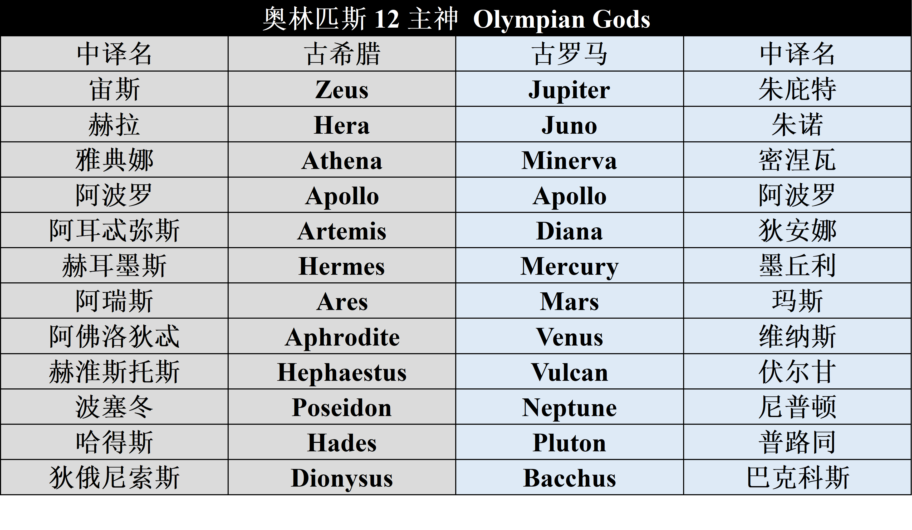

古希腊罗马神话的主体部分讲述的是奥林匹斯神（Olympian Gods）时代发生的事情。这之前还有两代神，分别是第一代原始神（Primordial Gods），以及第二代提坦众神（Titan Gods）。约公元前8世纪，希腊诗人赫西俄德著《神谱》，讲述了三代神之间的关系，有兴趣的可以参考这部作品，自己先了解。在现在文学艺术作品中，前两代神出现的频率非常低，不认识他们没有多大影响，因此我们跳过这两代神，首先了解奥林匹斯神。关于奥林匹斯神我们将会分为以下几部分：（1）奥林匹斯山十二主神，这十二个神十分重要，尽管没有专门描述他们的史诗作品，但是他们在文学艺术作品中无处不在。希腊和罗马神话中这12位神的事迹基本一致，只是名称不一致。下表参考梁德润编撰的词典，列出了这12位主神的名字。（2）12主神之后，我们将按照领域来讲其他神：天空之神（sky）、海洋之神(sea)、大地之神(earth)、冥界之神（underworld）、小神以及神化的人(minor deities and apotheosed mortals) 。
古希腊罗马神话12主神对照表
